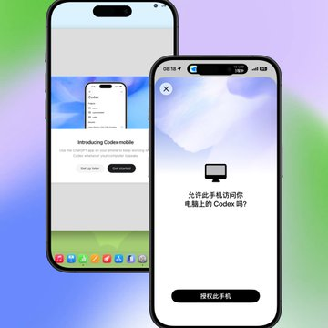
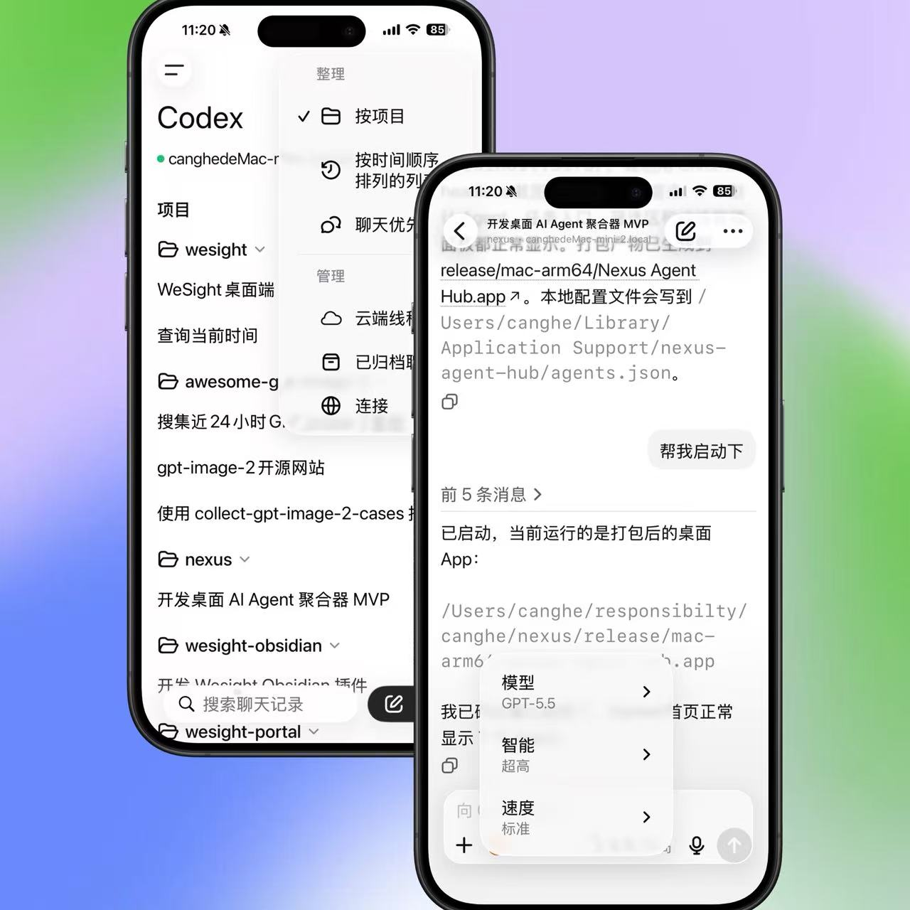

04 入门准备
用手机端 Codex 跟进桌面任务
Codex 现在支持 Android 和 iOS 手机。在手机上发消息，就能操作电脑上的 Codex。
本站同步：本节已同步为站内教程，可直接阅读；账号、套餐、权限和界面以实际显示为准。
来源：CodexGuide 原文。原页面标注 MIT Licensed；原图与说明按页面内容保留。
用手机端 Codex 跟进桌面任务
💡 最后核对 官方资料最后核对日期：2026-06-13。本文参考 OpenAI 官方文章 Work with Codex from anywhere。具体入口、可用地区、系统支持和界面名称会随客户端更新变化，请以当前 ChatGPT 手机 App 和 Codex 桌面 App 为准。
Codex 现在支持 Android 和 iOS 手机。在手机上发消息，就能操作电脑上的 Codex。
简单说：电脑上的 Codex 在跑，手机连过去，离开电脑时也能查看、回复、审批和调整任务。
把 ChatGPT App 更新到最新版，然后选择连接电脑上的 Codex。
连接桌面 Codex APP：

在 ChatGPT 里打开 Codex 就能用。

它能做什么
手机连上电脑后，你可以在以下场景派上用场：
- 查看正在进行的线程和任务状态。
- 阅读 Codex 的阶段性输出、终端输出、截图、diff 和测试结果。
- 回复 Codex 的进一步提问。
- 审批命令、网络访问或其他需要人工确认的操作。
- 改变任务方向、切换模型或补充新的上下文。
- 新建任务，让 Codex 从已连接的开发环境里开始工作。
任务实际还是在电脑上跑。文件、依赖、凭据、权限和本地配置不会因为连了手机就搬到手机上。
使用前提
使用前先确认：
- 手机上安装并更新 ChatGPT App。
- 电脑上安装并更新 Codex 桌面 App。
- 手机和电脑登录同一个 ChatGPT / OpenAI 账号，且处在支持 Codex 的地区和套餐范围内。
- 桌面 App 已经连接到对应项目，或 Codex 正在某台已授权机器、devbox、远程环境中运行。
- 如果任务会写文件、跑命令、访问网络，仍然需要理解并确认对应权限。
推荐使用场景
手机端适合「离开电脑但不想让任务停住」的场景：
- 通勤路上查看长任务进展。
- Codex 需要你选择方案时，快速给出方向。
- 任务卡在权限审批时，从手机上批准或拒绝。
- 会议前让 Codex 汇总最新代码、issue、文档或客户背景。
- 突然想到一个改动点，先发给 Codex 开始探索，回到电脑后再细看 diff。
不适合怎么用
手机端不能替代完整的本地审查。下面这些事情最好回电脑上做：
- 大范围代码合并前的最终 review。
- 涉及生产环境、密钥、账单、发布部署的高风险操作。
- 需要长时间阅读大量 diff 的任务。
- 需要你手动操作 IDE、调试器或本地 GUI 的任务。
毕竟电脑的大屏优势仍然是不可替代的。
一个典型流程
- 在电脑上打开 Codex 桌面 App，进入对应项目。
- 让 Codex 开始一个需要较长时间的任务，例如排查失败测试或整理文档。
- 离开电脑，在 ChatGPT 手机 App 中进入 Codex。
- 打开同一个正在运行的任务线程。
- 查看 Codex 的输出、截图、终端日志、测试结果或 diff。
- Codex 需要确认时，直接在手机上回复、审批或调整方向。
- 回到电脑后，再做完整 diff review、运行验证命令和提交。
和 Codex Cloud 的区别
| 对比项 | 手机端连接桌面 App | Codex Cloud |
|---|---|---|
| 执行位置 | 你的电脑、devbox 或远程环境 | OpenAI / ChatGPT 连接的云端任务环境 |
| 文件与凭据 | 留在原机器上 | 依赖云端连接的仓库与授权 |
| 适合任务 | 跟进本地长任务、审批、查看结果 | 不依赖本地电脑的仓库任务 |
| 是否能离开电脑 | 可以，但要确保网络通畅 | 可以 |
下一步：连接第三方 API